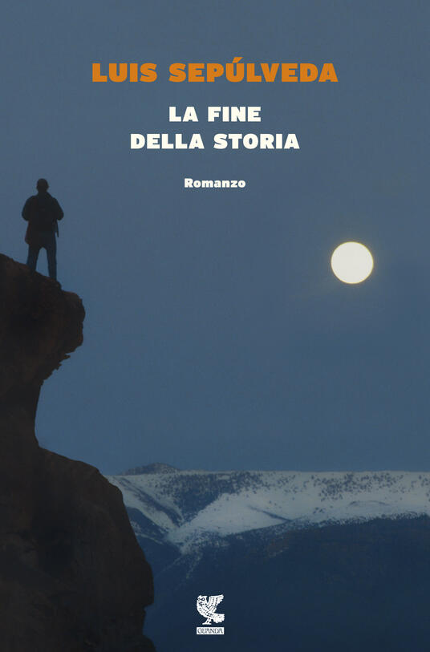
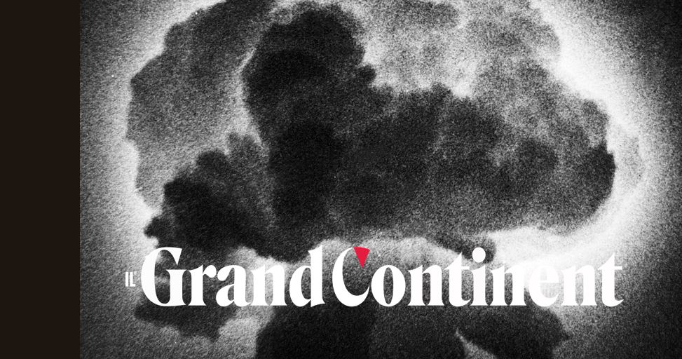
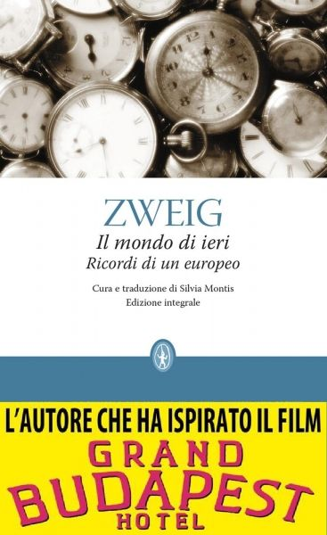
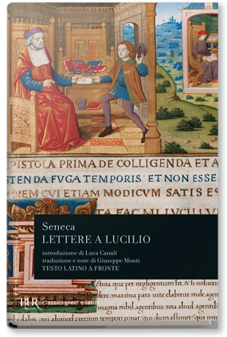
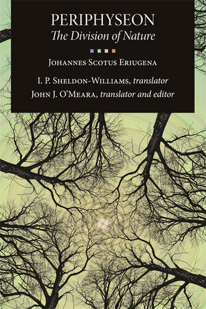
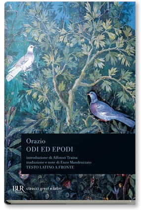

32:48 · 20 OPERE
La stanchezza di Europa e l’eterno ritorno dell’informe.
Il filo del discorso
Il contributo sviluppa una riflessione sulla fragilità della civiltà europea, sulla perdita di senso e sul compito di custodire autonomia e razionalità. Le guerre mondiali, i diari di Astrid Lindgren e il ricordo di Zweig introducono l’immagine di un mondo che avrebbe smarrito la propria forma. Dr Divago accosta letture filosofiche, letterarie e teologiche per descrivere il nichilismo come un vuoto che può occupare parole, istituzioni e vita individuale. Nietzsche è insieme una fonte e un bersaglio polemico; la questione dell’obbedienza conduce alla difesa della coscienza personale e della società liberale. Nella parte centrale il relatore critica l’utilitarismo, la riduzione del valore al denaro e l’adattamento al mondo amministrato, opponendo autonomia e integrazione passiva. Seguono la metafora del vuoto nella natura, il sapere come esercizio della meraviglia e una lettura della sapienza biblica e della teologia negativa. Seneca, Eriugena e Goethe accompagnano la distinzione proposta fra conoscenza, sapienza e vita. Pascal e Shakespeare chiudono il discorso sulla ripetizione, la disperazione e la necessità di tenere accesa una luce di senso. È una costruzione interpretativa del relatore: la scheda conserva le differenze fra citazioni, immagini poetiche e tesi storiche o filosofiche, senza presentare la diagnosi di decadenza come un fatto misurato né le metafore spirituali come diagnosi cliniche.
I libri nel discorso

Macbeth
Copertina: BUR Classici, 25 gennaio 2022, introduzione, note e traduzione di Rocco Coronato, testo inglese a fronte, 272 pagine; ISBN 9788817160667.
Immagine autentica dell’opera, controllata visivamente; l’edizione di riferimento non è attribuita al filmato.
I nostri ieri e gli sciocchi; ripresa conclusiva di signifying nothing esplicitamente attribuita al Macbeth.
Passaggio 0:13 ↗ · Fonti e libro ↗Diari di guerra 1939–1945 (Krigsdagböcker 1939–1945)
Copertina: A World Gone Mad. The Diaries of Astrid Lindgren,1939–45, Pushkin Press, paperback,26 ottobre 2017, traduzione Sarah Death,240 pagine; ISBN 9781782273073.
Copertina autentica della traduzione inglese Pushkin Press. I diari furono composti durante la guerra e pubblicati in svedese nel 2015;1939–1945 indica il periodo narrato, non la data editoriale. Nessuna edizione italiana o copia fisica specifica è attribuita al video.
Astrid Lindgren e i diari del 1939–1945, titolo descrittivo e autrice espliciti.
Passaggio 1:37 ↗ · Fonti e libro ↗
La fine della storia
Copertina: Guanda, Narratori della Fenice,2016, traduzione Ilide Carmignani; ISBN 9788823508057. Il conteggio delle pagine varia fra schede ed edizioni e non viene risolto per congettura.
Immagine autentica dell’opera, controllata visivamente; l’edizione di riferimento non è attribuita al filmato.
Luis Sepúlveda, El fin de la historia/La fine della storia; frase attribuita a un personaggio.
Passaggio 2:24 ↗ · Fonti e libro ↗
Critica della ragion pratica
Identificazione probabile
Copertina: Bompiani, 2000
Il cielo stellato sopra di noi e Kant: rinvio probabile alla conclusione della Critica della ragion pratica.
Passaggio 4:30 ↗ · Fonti e libro ↗
Due appunti sulla fine del mondo (Zwei Randbemerkungen zum Weltuntergang)
Identificazione probabile
Illustrazione della ripubblicazione: Originale in Kursbuch 52, maggio 1978; traduzione inglese Two Notes on the End of the World, New Left Review I/110, luglio–agosto 1978, pp.74–80. Ripubblicazione italiana Il Grand Continent,31 dicembre 2022.
Immagine autentica della ripubblicazione italiana 2022: fotografia di nube da esplosione atomica con marchio Il Grand Continent. È l’illustrazione di un articolo, non una copertina di Kursbuch 1978 o di un libro.
Enzensberger, apocalisse come afrodisiaco e catastrofe a pezzi: saggio identificato dal contenuto, titolo non pronunciato.
Passaggio 5:17 ↗ · Fonti e libro ↗
Bibbia
Copertina: San Paolo, 2014 · Nuova Versione dai Testi Antichi · edizione di riferimento
Libro dei Proverbi: timore dell’Eterno, conoscenza, odio del male; passi distinti 1,7 e 8,13.
Passaggio 6:23 ↗ · Fonti e libro ↗
La volontà di potenza
Copertina: Bompiani · 2001 · a cura di Maurizio Ferraris e Pietro Kobau
Copertina autentica della raccolta di frammenti postumi ordinati da Gast e Förster-Nietzsche, come dichiarato anche nell’immagine. Non indica un’opera conclusa da Nietzsche né l’edizione posseduta dal narratore.
La volontà di potenza e storia dei prossimi due secoli: titolo esplicito, raccolta postuma.
Passaggio 7:27 ↗ · Fonti e libro ↗
Risposta alla domanda: che cos’è l’Illuminismo?
Identificazione probabile
Copertina della raccolta che comprende il saggio sull’Illuminismo: Firenze University Press · Sette scritti politici liberi · 2011 · a cura di Maria Chiara Pievatolo
Copertina del volume cartaceo FUP che comprende il saggio, riscontrato dal catalogo universitario. L’ISBN appartiene alla raccolta; il filmato non annuncia un’edizione e il titolo del saggio è un’identificazione probabile della citazione.
Minorità e autonomia kantiane: rinvio probabile alla Risposta sull’Illuminismo, titolo non pronunciato.
Passaggio 10:04 ↗ · Fonti e libro ↗
Il mondo di ieri. Ricordi di un europeo
Copertina: Newton Compton, edizione integrale, cura e traduzione di Silvia Montis,352 pagine; ISBN indicato nel catalogo 9788854148819.
Copertina autentica della scheda Newton Compton, con fascetta promozionale riferita al film Grand Budapest Hotel. La fascetta è parte dell’immagine editoriale, non un’opera aggiunta al repertorio. Nessuna tiratura specifica è attribuita al video.
Stefan Zweig, Il mondo di ieri, titolo esplicito.
Passaggio 11:10 ↗ · Fonti e libro ↗
Apocalittici e integrati
Copertina: La nave di Teseo, I delfini, 2025; opera originariamente pubblicata nel 1964.
Immagine autentica dell’opera, controllata visivamente; l’edizione di riferimento non è attribuita al filmato.
Umberto Eco, Apocalittici e integrati,1964, titolo e autore espliciti.
Passaggio 18:02 ↗ · Fonti e libro ↗
Dichiarazione d’indipendenza degli Stati Uniti d’America
Identificazione probabile
Facsimile: incisione di Stone del 1823: Documento del 4 luglio 1776 · incisione di William J. Stone del 1823
Riproduzione documentaria dell’incisione di Stone del 1823 conservata dai National Archives. Non è la pergamena originale del 1776, né la copertina di un libro.
Life, liberty and the pursuit of happiness: rinvio probabile alla Dichiarazione americana, documento non nominato per titolo.
Passaggio 20:31 ↗ · Fonti e libro ↗
Fisica
Copertina di Opere III: Fisica, Del cielo: Laterza · Opere III, Fisica e Del cielo · traduzioni Russo e Longo
Copertina autentica del volume III delle Opere di Aristotele, che contiene Fisica e Del cielo. Catalogo Laterza: edizione 1983, ristampa 2007. Il dato automatico data di pubblicazione della pagina corrente non è assunto come anno originale del libro.
Aristotele, libro IV della Fisica, vuoto, titolo e collocazione espliciti.
Passaggio 20:52 ↗ · Fonti e libro ↗
Così parlò Zarathustra
Identificazione probabile
Copertina: Adelphi · Piccola Biblioteca Adelphi · riferimento
Immagine associata all’ISBN di riferimento e controllata visivamente; edizione e traduzione non identificate come quelle citate o lette nel video.
Eterno ritorno e tempo circolare: passo del nano in Della visione e dell’enigma, titolo generale non pronunciato.
Passaggio 21:41 ↗ · Fonti e libro ↗
Lettere a Lucilio
Identificazione probabile
Copertina: BUR, catalogo 18 ottobre 1974,1098 pagine, introduzione Luca Canali, traduzione Giuseppe Monti, contributi Ettore Barelli; ISBN 9788817120135.
Copertina autentica della raccolta integrale in catalogo BUR, testo latino a fronte. La data del catalogo non certifica che la riproduzione appartenga alla prima tiratura del 1974. Non è una copertina autonoma della lettera 120.
Seneca, natura e semi della conoscenza: rinvio probabile a Lettere a Lucilio 120,4.
Passaggio 23:02 ↗ · Fonti e libro ↗Bibbia
Copertina: San Paolo, 2014 · Nuova Versione dai Testi Antichi · edizione di riferimento
Genesi e bontà della creazione, poi sapienza precedente agli atti creatori nei Proverbi.
Passaggio 23:43 ↗ · Fonti e libro ↗
Periphyseon (Sulle nature dell’universo; De divisione naturae)
Copertina: Periphyseon: The Division of Nature, Dumbarton Oaks Research Library and Collection, paperback,2 settembre 2025,728 pagine, traduzione I.P.Sheldon-Williams e revisione di John J.O’Meara; ISBN 9780884024620.
Copertina specifica dell’edizione inglese 2025, titolo, autore e traduttori leggibili. È un riferimento editoriale successivo alla prima traduzione del 1987, non una copia identificata nel filmato. L’edizione è distinta da quella della collana Corpus Christianorum di Brepols.
Scoto Eriugena, Periphyseon e il significato teologico del nulla, titolo esplicito.
Passaggio 26:04 ↗ · Fonti e libro ↗
Faust
Copertina: BUR / Rizzoli · 2005
Immagine autentica dell’opera, controllata visivamente; l’edizione di riferimento non è attribuita al filmato.
Goethe, teoria grigia e albero verde della vita; Faust esplicitamente richiamato più avanti.
Passaggio 26:55 ↗ · Fonti e libro ↗
Pensieri
Identificazione probabile
Copertina: UTET · a cura di Bruno Nacci · 2021
Copertina autentica dell’edizione di riferimento, non attribuita all’esemplare del video.
Pascal, canna pensante e frammento dei condannati a morte; raccolta identificata dai passi, titolo non pronunciato.
Passaggio 29:15 ↗ · Fonti e libro ↗
Odi III,2 (Angustam amice pauperiem)
Identificazione probabile
Copertina della raccolta: Raccolta Odi ed Epodi, BUR, a cura di Enzo Mandruzzato, introduzione Alfonso Traina, testo latino a fronte; ISBN 9788817165136, anno di catalogo 1985 con ristampe successive.
Copertina della raccolta Odi ed Epodi, che comprende anche Odi I, 11. Il rimando qui riguarda la diversa poesia III, 2. Nessuna ristampa specifica è attribuita al video.
Orazio, pede Poena claudo: Odi III,2,31–32; numero e titolo non pronunciati.
Passaggio 30:41 ↗ · Fonti e libro ↗
Amleto
Copertina: BUR · 2022 · traduzione di Rocco Coronato · illustrazioni di John Austen
Immagine autentica dell’opera, controllata visivamente; non identifica l’edizione usata nel video.
Amleto, guscio di noce e cattivi sogni, atto II scena 2; personaggio esplicitamente nominato.
Passaggio 32:05 ↗ · Fonti e libro ↗